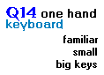
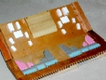
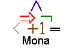
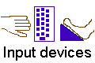
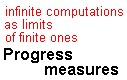

|
|
XML research
survey.
(draft version). XML: Model,
Schemas, Types, Logics and Queries (with Thomas
Schwentick and Dan Suciu), revised version to appear in
Logics of emerging applications of databases,
Eds. J. Chomicki, G. Saake, and R. van der Meyden,
Springer Verlag, 2003. Related invited talk
at NICTA Inaugural Formal Methods Programme Workshop.
|
|

|
Language
modeling for typing on Q14 and other reduced
keyboards.
We show that the word error rate for
typing on a keyboard where adjacent keys have been
clustered in pairs according to the QWERTY layout may be
made almost negligible thanks to large language models
used in speech recognition.  The keyboard is now available
on the BlackBerry 7100. The keyboard is now available
on the BlackBerry 7100.
|
|

|
ShortStep
foot keyboard design.
A radically different
approach to managing computer-related discomfort.
Almost every keyboard shortcut is directly accessible
through foot keys. The ShortStep keyboard allows
you to lean back in your chair while working on
repetitive tasks with little or no use of your arms.
Concept and software
are hosted at SourceForge.
|
|

|
Making decades-old theory linking automata and
logic work in practice.
The concept of BDD for encoding Boolean functions
plays an important role in verification. Mona is a
tool based on a more general theory related to
decidable fragments of arithmetic. Applications of
Mona include hardware verification, protocol
configuration, pointer analysis, parsing, theorem
proving, etc.
|

|
Towards a foundation for multimodal, multimedia
content definition.
Multimedia content—where
audio, video, and graphics—are synchronized in
sophisticated ways is already common on the Web.
Multimodal interfaces extend usability by integrating
speech recognition, gestures, etc. A foundation for
such work must be based on a programming language that
includes concurrency, timing constraints, and built-in
undo support. The survey talk (html) [Powerpoint] explains my
interests in user interface technology and how they lead to
fundamental questions about events and synchronicity.
|

|
Editing
talk so enticingly efficient it is a pleasure to
learn.
Speech recognition as a way of getting your thoughts
across the human-machine interface remains an elusive
technology. ShortTalk solves the problem in the domain
of text composition though a constructed editing
language. Slides
from talk:
ShortTalk and ShortStep—with mid-20th century insights
into universal and perfect languages. ShortTalk paper presented
at ICME '2003 (also,
ICASSP '2003). Now
available
at SourceForge as open speech
software offered by Carnegie Mellon University.
|
|

|
Usage-driven design.
Since overuse injury is a long-term result, most
"ergonomic" design remains unproven—despite claims of
positive results in trials. I have experimented with
input device concepts for over 10 years. It is my hope
that the couple of surviving ideas may help other people
suffering from computer-induced pain.
|

|
The essentials of XML
Clogged by
contradictory and complex specifications, XML at heart
is a welcome practical manifestation of tested ideas in
computer science. With the DSD work, we try to
influence the XML community through proposals rooted in
programming language and automata theory. DSD 2.0
by Anders Møller can be found at the
DSD Web site.
|
|

|
Understanding infinite computations in terms of
finite ones.
In my Ph.D. thesis, I argued that infinite computations
that involve liveness are best understood as limits of
finite ones. The finite approximations are
characterized by a progress value. For various levels
of topological complexity, it is possible to formulate
such measures of progress. Applications include
reasoning about fairness and analyses of automata on
infinite objects.
|

 printer-friendly version
printer-friendly version e-mail Klarlund
e-mail Klarlund Nils
Klarlund home
Nils
Klarlund home